DI Designathon: Hubbble

A reimagined platform that bridges the gap between education and career for designers. It fosters professional growth through weekly challenges, niche communities, and a unique creative networking swipe feature. By blending a portfolio showcase with a welcoming community, Hubbble empowers users to sharpen their skills and build lasting industry connections.
I collaborated with two designers to research and build Hubbble during an 8-hour designathon at UC Davis. I served as one of the main designers, conducting user interviews, brainstorming initial designs to final prototype.
Mobile UI/UX
Product Design
Research
8 Hours
AWARDSBest Overall Design
Objective: With the dynamic nature of the industry, designers find themselves navigating a constant stream of new trends and technologies, often struggling to stay ahead with career expectations. Design a mobile or desktop application that seamlessly integrates with individuals’ daily lives to promote education and career development.
Personas
We utilised the premade user personas developed by Design Interactive to understand the struggles of our target audience and to gain insight on what specific needs our users had; students wanting to network, seek more opportunities to improve their craft, and apply their skills to help their peers.

Interviews
We also conducted user interviews with four participants about their experience with career and education development and how they currently struggle with aspects such as network growth, and education development.

Competitive Audit
I performed competitive analysis on platforms offering users opportunities and events for personal growth and networking. I identified standout features and effective strategies between each platform and discussed how we can incorporate similar features into our app.
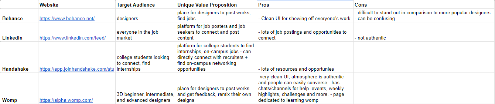
Research Summary
Through our research, we found that:
It was difficult to find people to connect with and to keep that connection.
Furthering education and experience relied on projects and online courses/videos.
Starting/finding new projects to work on relied on friends or clubs.
Wire-Frames
With our tight deadline, I began by identifying what key aspects of the app we wanted to showcase, allowing us to divide and conquer the task. I created a clear checklist of screens to be developed:
- Home Page: The main hub for a weekly design challenge and hot "Hubbbles" (communities) the algorithm believes the user may be interested in.
- Connection Page: A fun swipe to connect feature for expanding network; a easy, friendlier, more casual way for users to connect and strip away the layer of awkwardness
- Profile Page: This page acts as a built in portfolio where users can showcase their work.
- The "Hubbbles": Where all the communities and groups are located. Built for users to find the specific groups they're looking for, such as project groups or people who want portfolio or resume review. This social media setting would allow users to authentically connect and develop in their career.
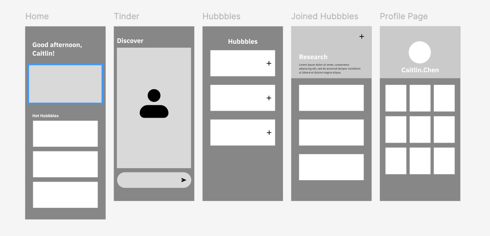
Design System
We focused on creating a fun, casual app for users to feel comfortable conversing and supporting each other naturally. Implementing a space theme based on the Hubble Telescope because of Hubble’s many achievements and contributions to space discovery. We thought this idea encompassed our goals of creating a space to learn, achieve, and contribute to many great things.
Color
Typography
Mascot
Submission
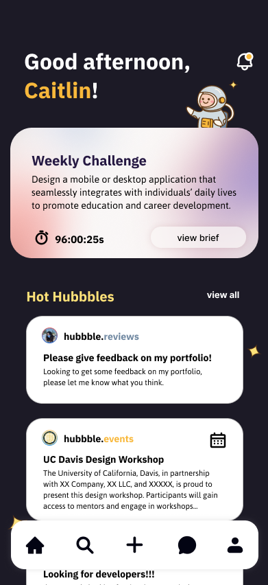
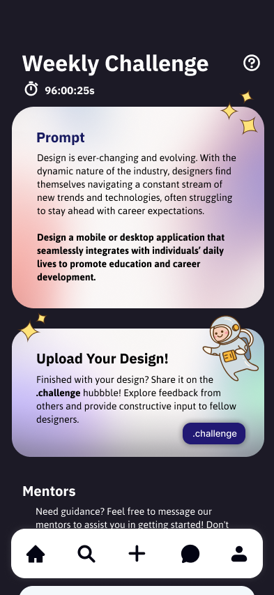
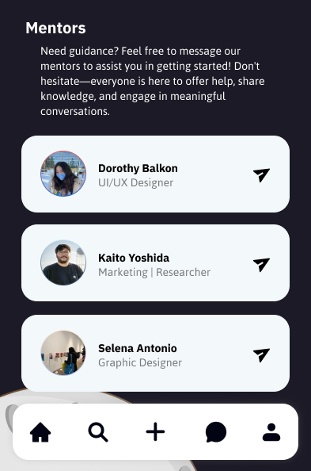
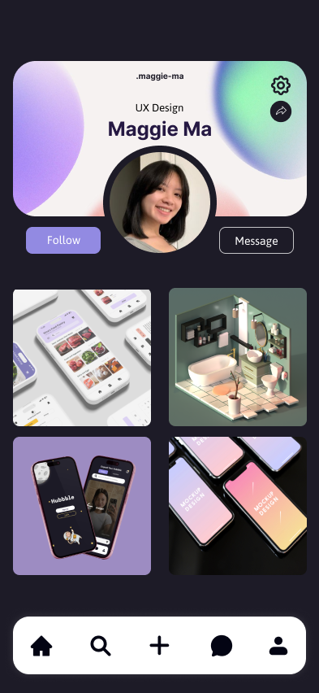
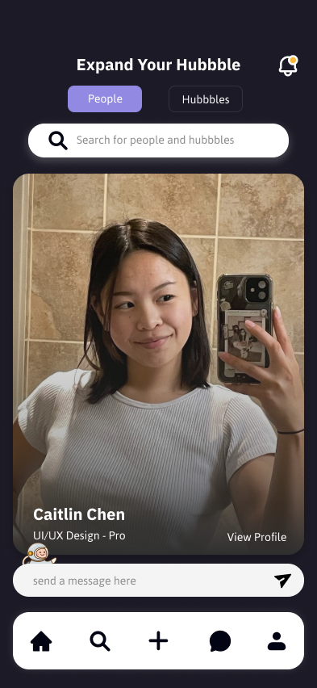
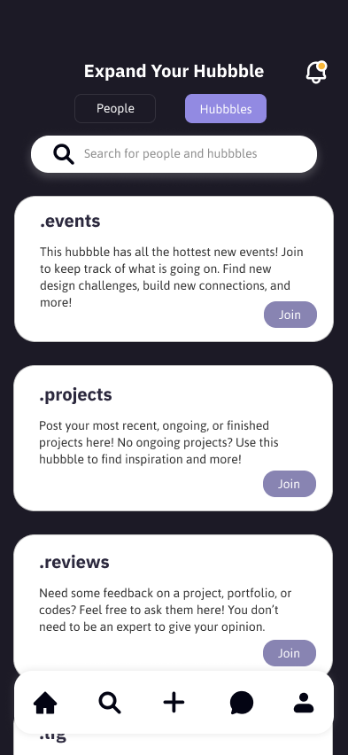
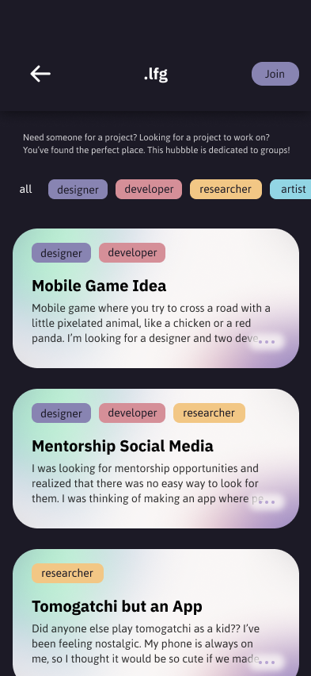
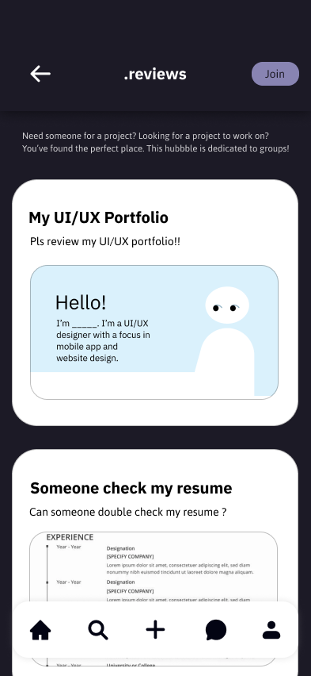
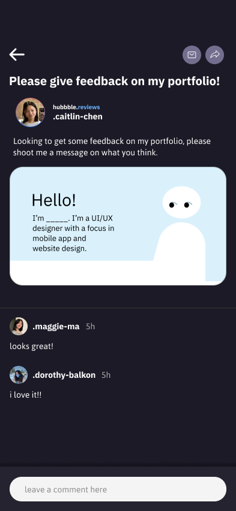
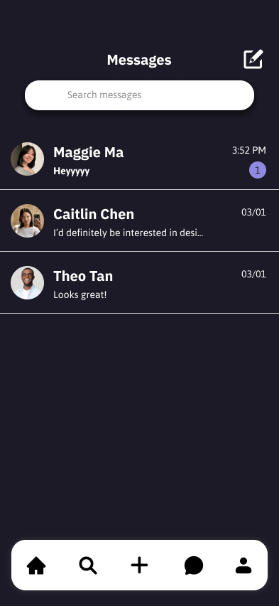
Prototype Demo
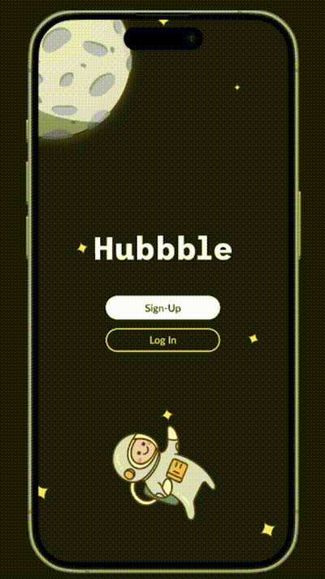